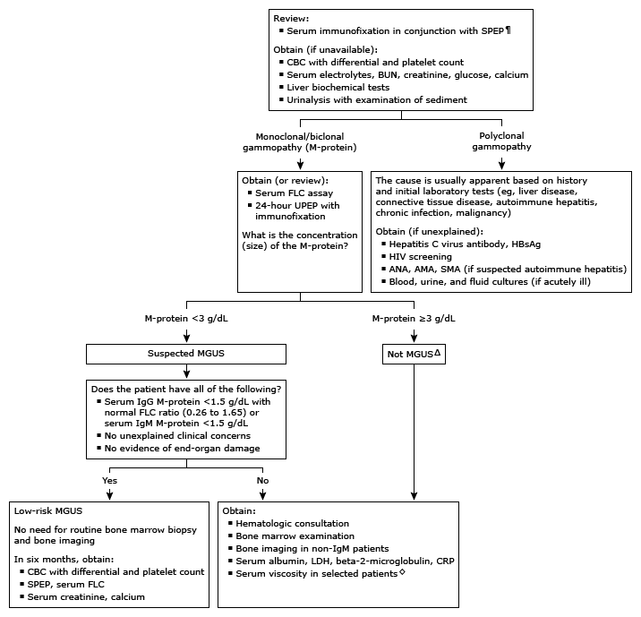

AMA: antimitochondrial antibodies; ANA: antinuclear antibodies; BUN: blood urea nitrogen; CBC: complete blood count; CRP: C-reactive protein; FLC: free light chain; HBsAg: hepatitis B surface antigen; HIV: human immunodeficiency virus; IgA: immunoglobulin A; IgD: immunoglobulin D; IgE: immunoglobulin E; IgG: immunoglobulin G; IgM: immunoglobulin M; LDH: lactate dehydrogenase; MGUS: monoclonal gammopathy of undetermined significance; SMA: smooth muscle antibodies; SPEP: serum protein electrophoresis; UPEP: urine protein electrophoresis.
* SPEP separates proteins into five regions (albumin, alpha-1, alpha-2, beta, and gamma). Immunoglobulin classes (IgG, IgA, IgM, IgD, and IgE) are usually located in the gamma region of the SPEP, but may also be found in the beta-gamma, beta regions, and occasionally extend into the alpha-2 globulin region. The laboratory should be contacted concerning interpretation of these tests.
¶ An initial SPEP should always be performed in combination with serum immunofixation in order to determine and confirm clonality if a monoclonal protein-spike (M-spike) is identified, and to determine the immunoglobulin heavy and light chain class.
Δ A patient likely does not have MGUS if any of the following:◊ Serum viscosity should be measured in patients with signs and symptoms of hyperviscosity and in all patients, regardless of symptoms, with a monoclonal IgM protein spike >4 g/dL or an IgA or IgG protein spike >6 g/dL.